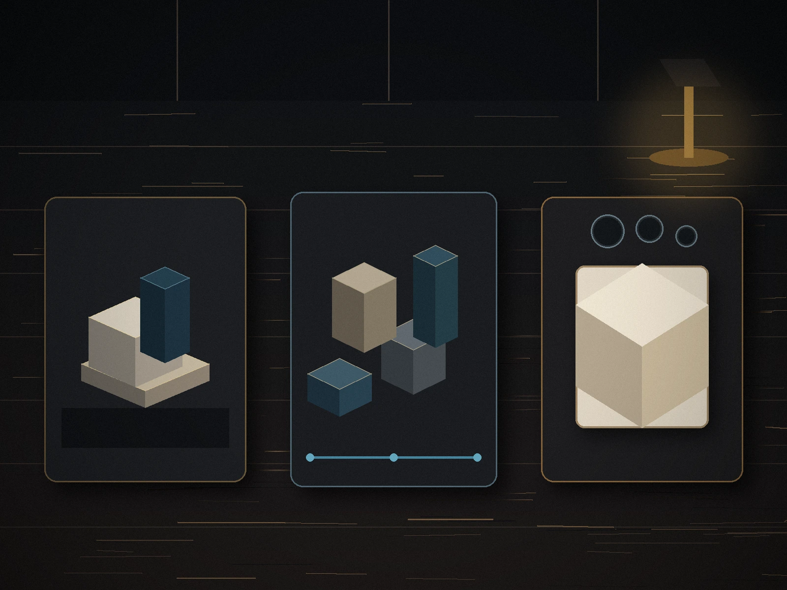

What we might prescribe
Solutions that work together.
We design the right mix for your business, not a one-size-fits-all checklist.
Services
Some businesses need a better website. Some need stronger traffic. Some need follow-up that stops relying on memory. Most need the pieces connected.
Start with the symptom
Unclear offer, weak page structure, poor trust signals, or a confusing path to contact.
Website rebuild, landing page, conversion structure, lead capture, and messaging that connects.
The goal is not more traffic.
The goal is more qualified inquiries.
Lead details are scattered, ownership is unclear, and reminders depend on memory.
Lead routing, internal notifications, follow-up sequences, and CRM-compatible workflow planning.
Broad targeting, weak conversion tracking, or ad traffic arriving on a generic page.
Campaign restructuring, landing page alignment, GA4 and Tag Manager events, search-term controls, and call tracking.
The website no longer reflects the business, loads poorly on mobile, or leaves visitors unsure what to do next.
A custom-coded rebuild or WordPress redesign with clearer positioning, stronger trust, and a cleaner inquiry path.
Website, SEO, ads, forms, and reporting were assembled separately without one operating model.
A phased digital foundation connecting visibility, conversion, follow-up, and measurement.
What we might prescribe
We design the right mix for your business, not a one-size-fits-all checklist.
Custom websites built for clarity, trust, and conversion.
Technical SEO, local relevance, content structure, metadata, schema, and internal linking.
Google Ads strategy, landing pages, lead quality, call tracking, and reporting.
Forms, quote flows, intake questions, consent language, and thank-you paths.
Routing, reminders, notifications, and CRM-compatible workflows.
GA4, Search Console, Tag Manager, conversion events, source tracking, and reports.
Choose the right scale
Each package has a defined production allowance, revision limit, hosting setup, deployment, domain connection, and handoff. Hosting fees are paid directly by the client to the selected provider.
$650–$900
Up to 10 hours · one page · no SEO program · 14 days support.
$1,200–$1,800
Up to 22 hours · up to four pages · foundational SEO · 30 days support.
$2,200–$3,500
Up to 45 hours · five to eight pages · comprehensive foundations · 60 days support.
$4,000–$6,500+
Up to 80 hours · 10–15 pages · advanced SEO and production allowances · 90 days support.

Platform guidance
Recommended for most service-business marketing sites.
Useful when frequent client-managed publishing is genuinely needed.
Quoted separately, starting at $3,500.
Add only what you need
Homepage $250–$400; service pages $150–$250.
Crop, resize, compress, and format conversion where included.
Simple edits $20–$40; detailed retouching $50–$125.
Standard page $200–$350.
Campaign landing pages $350–$600.
Mortgage, quote, payment, and other tools from $600.
Expedited delivery adds 20%–25% where scheduling allows.
Bring us the website, the goal, or the bottleneck. We’ll help identify the right starting point.